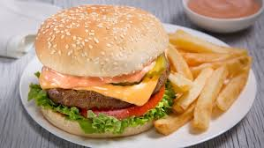
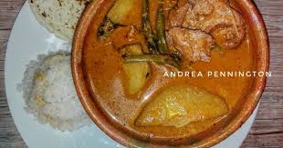
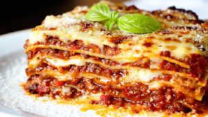
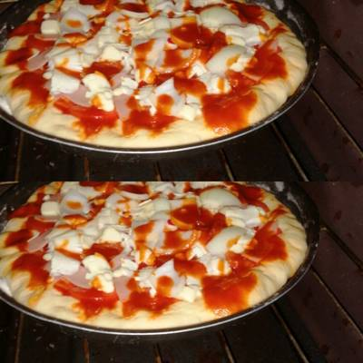

 Se prepara en varios pasos pero sencillos, INGREDIENTES: 1/2 libra de carne molida, Tomate, limpio y cortado en rodajas, Cebolla cortada en aros, Lechuga fresca y limpia, Salsa ketchup y Mayonesa y Pan de hamburguesa.
 Un platillo 100% guatemalteco, reune los sabores mas deliciosos de nuestra tierra con una carne guisada en una salsa muy rica de chiles secos, tomates, cebolla, y ajo; Con un sabor azado y que se le agregan algunas papas y ejotes, sin duda un platillo muy rico de degustar.
 Y retirandonos un poco de nuestras fronteras, no podía faltar una deliciosa pasta, y que mejor que una rica lasagna. Con un sabor horneado y bastantes especias que la hacen uno de los platillos mas ricos y de los cuales si o si tienes que probar, con un queso gratinado entre capas y por encima los hace uno de los placeres al paladar muy rico.
 Y no podia faltar la deliciosa pizza siguiendo en el lado de las pastas, con una rica cobertura de queso parmesano y mozzarela y los ingredientes adecuados lo hacen un manjar de las pastas\. Teniendo diferentes ingredientes y sabores la hacen un platillo que puede estar a nuestra eleccion.